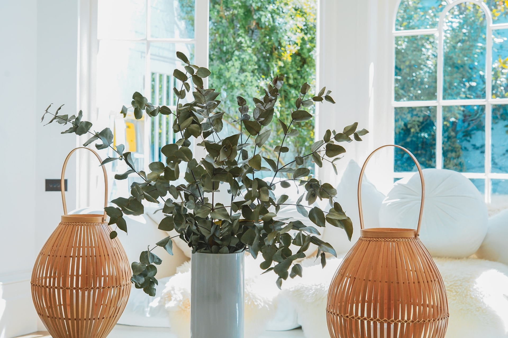

Cambios y transformaciones
Ez estudio de arquitectura al contar con profesionales especializados en la decoración de interiores y exteriores de viviendas, pretende cumplir el objetivo de enriquecer cada uno de los ambientes de su hogar para que todo sea realmente funcional, armónico y brinde una mejor calidad de vida. Un proyecto que inicia es una oportunidad de transformación, de reordenar el espacio, de pensar cada detalle del día a día y dejar nuestra huella. Nos involucramos de lleno para sorprenderlos con espacios únicos, que se destacan por su equilibrio estético y funcionalidad. Cada espacio refleja la esencia de nuestro estudio. Dirigimos y ejecutamos los proyectos desde el inicio de una idea hasta el último detalle de su materialización. Nos esforzamos en que disfrutes no sólo del resultado, sino también del proceso, ya que somos conscientes de las ilusiones y emociones que conlleva el trabajo que realizamos.
El antes y después de la reforma de una vivienda de los años '90
ANTES: Living-comedor
La casa cuenta con un enorme salón pero estaba armado de manera disfuncional provocando amontonamiento pese al espacio. Los colores apagaban el lugar dando un aire a viejo, fuera de lo moderno.

DESPUÉS: Sala de estar
Lo que hicimos fue reordenar y quedó sólo de sala de estar. Tras la renovación se conservaron los apliques y las cornisas de yeso del espacio, y el papel pintado se sustituyó por una pintura en tonos cálidos.
ANTES: Cocina
Además de estar anticuada, la cocina original era demasiado estrecha.
DESPUÉS: Cocina moderna
Se realizó una ampliación y se construyeron estanterías abiertas en la pared para maximizar el espacio y la funcionalidad. Ahora siempre hay luz y es moderna y acogedora.
ANTES:
Este el baño principal de la vivienda, estaba en buenas condiciones pero era necesario renovarlo, se modificó la distribución de los artefactos y grifería.

DESPUÉS: Baño reformado
El baño principal está inspirado en los años sesenta, se adquirieron azulesjos de importantes casas de diseño para realizar el revestimiento de paredes y bañadera.
ANTES: Patio en desorden
Cuando la familia se mudó por primera vez, la zona exterior estaba hecha un desastre.
.png)
DESPUÉS: Patio renovado
Se instalaron ventanas de madera con doble acristalamiento en toda la casa, y se fabricó una puerta principal angular de madera a medida. Se restauró la fachada original de ladrillo y el pavimento de piedra arenisca.
DESPUÉS: Living encantador
Las baldosas de terracota hechas a mano para el suelo de la cocina, el comedor y el salón.
DESPUÉS:
La preciosa y amplia entrada está pintada en un tono anaranjado y complementa la escalera de madera.